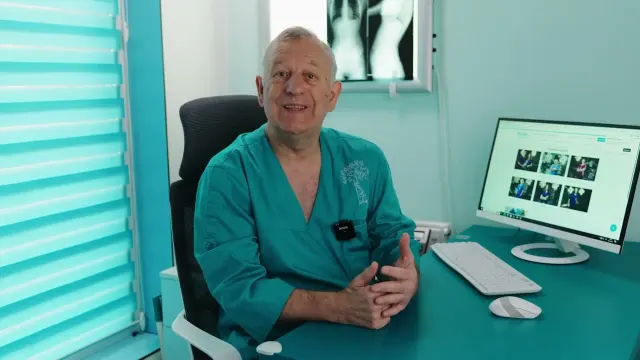
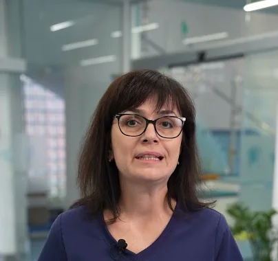
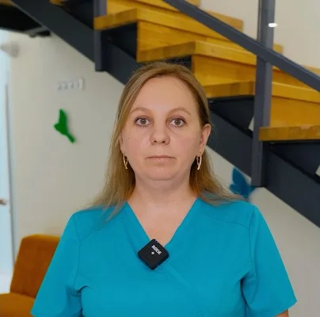
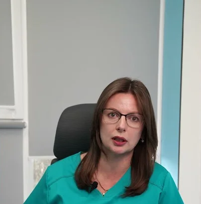
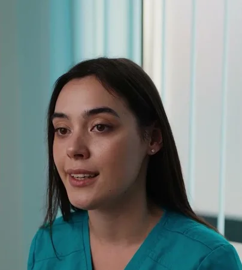
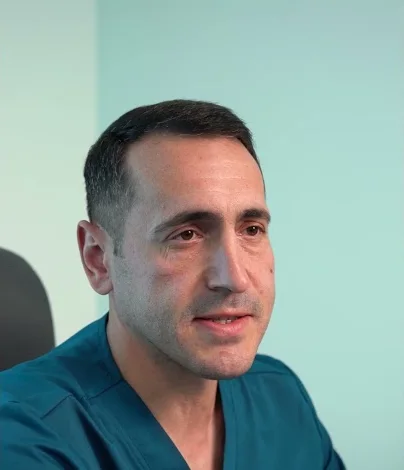
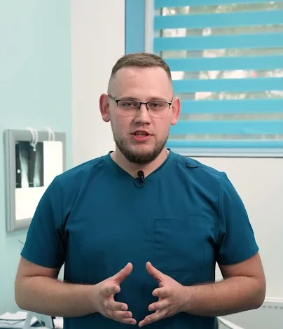
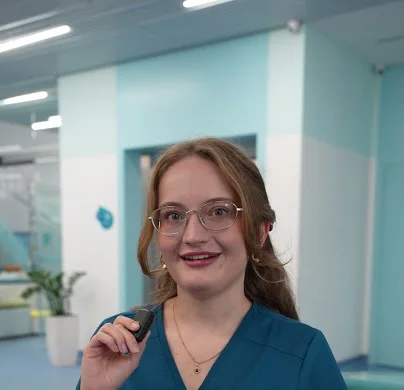
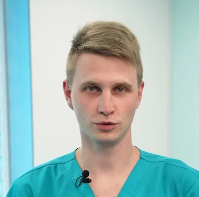

Медичний центр у Львові для дітей і дорослих
6 філій у Львові та Новояворівську, одна з них, на Чорновола, 43а, працює цілодобово.
Лікар додомуЛьвів — 4000 грн
067 105 17 48Одна веселка над усією родиною
Дітей і дорослих приймають в одній мережі. Оберіть свій маршрут: ціна-орієнтир і номер поруч.

Не знаєте, з чого почати? Контакт-центр підкаже лікаря і найближчу філію.
067 343 29 11-
Дитина
- Педіатрія
- Дитячі вузькі спеціалісти, 21 спеціальність
- Філія на Чорновола, 43а, працює цілодобово
Консультація педіатра 1150 грн
Записатися: 067 343 29 11 Педіатрія (Розділ у розробці)
-
Вагітність і малюк
- Ведення вагітності
- Програма «Я народився» для малюка
- Вакцинація і патронаж новонароджених
Пренатальний скринінг 4015 грн
Записатися: 067 343 29 11 Програми для вагітних (Розділ у розробці)
-
Дорослий
- Сімейна медицина
- Дорослі вузькі спеціалісти, близько 27 спеціальностей
- Check-up і оперативні втручання
Консультація сімейного лікаря 1150 грн
Записатися: 067 343 29 11 Дорослим (Розділ у розробці)
-
Сімейний лікар за декларацією
- Декларація з сімейним лікарем за програмою НСЗУ
- Інші послуги мережі — за цінами клініки
Сімейний лікар за декларацією безкоштовно
Підписати декларацію: 067 343 29 11 Декларантам (Розділ у розробці)
| Куди | Вартість |
|---|---|
| Львів, у межах міста | 4000 грн |
| За місто, до 20 км | 5000 грн |
| Новояворівськ | 3000 грн |
Check-up з цінами на виду
Універсальний check-up
2500 грн
Записатися на check-up Усі 36 програм (Розділ у розробці)
-
Check-up «Уролог» 2125 грн
Склад програми і підготовку пояснить контакт-центр: 067 343 29 11.
Опис програми (Розділ у розробці) -
Діагностика анемії 2710 грн
Склад програми і підготовку пояснить контакт-центр: 067 343 29 11.
Опис програми (Розділ у розробці) -
Стоматологічний check-up 2800 грн
Склад програми і підготовку пояснить контакт-центр: 067 343 29 11.
Опис програми (Розділ у розробці) -
Check-up «Здоров'я жінки» 3240 грн
Склад програми і підготовку пояснить контакт-центр: 067 343 29 11.
Опис програми (Розділ у розробці) -
Пренатальний скринінг I триместру 4015 грн
Склад програми і підготовку пояснить контакт-центр: 067 343 29 11.
Опис програми (Розділ у розробці) -
Контроль травлення 4900 грн
Склад програми і підготовку пояснить контакт-центр: 067 343 29 11.
Опис програми (Розділ у розробці) -
Печінка та вага 5820 грн
Склад програми і підготовку пояснить контакт-центр: 067 343 29 11.
Опис програми (Розділ у розробці) -
Програма «Я народився» ціну назве контакт-центр
Склад програми і підготовку пояснить контакт-центр: 067 343 29 11.
Опис програми (Розділ у розробці)
10 напрямків для всієї родини
Дітям
- ПедіатріяКонсультація педіатра — 1150 грн
- Дитячі вузькі спеціалісти21 спеціальність
Дорослим
- Сімейна медицинаКонсультація сімейного лікаря — 1150 грн
- Дорослі вузькі спеціалістиБлизько 27 спеціальностей
Також у мережі
- Діагностика лабораторна, УЗД, ендоскопія, функціональна, аудіометрія
- Оперативні втручання хірургія, ортопедія і травматологія, гінекологія, урологія, ЛОР, реконструктивна мамологія
- Імунопрофілактика
- Рентгенографія
- Фізична реабілітація
- Стоматологія
Сторінки напрямків (Розділ у розробці)








Консультація, власна лабораторія, лікування й ліки — в одній мережі
- Консультація
- Власна лабораторія
- Лікування
- Медикаменти
Мережа виросла з першої приватної дитячої поліклініки Львова, яка відкрилася у 2015 році на Сихові. Сьогодні тут лікують і дітей, і дорослих.
За даними клініки: понад 396 000 пацієнтів, 350+ лікарів і 32 000+ медичних послуг щомісяця. На doc.ua рейтинг мережі 5,0 за 1482 відгуками (станом на ).
Шість філій, одна працює цілодобово
Номер для всіх філій один: контакт-центр 067 343 29 11.
-
Сихів
Пн–Сб 8:00–20:00Нд 9:00–20:00Львів, пр. Червоної Калини, 68Перша філія мережі, з 2015 року Лікарі філії (Розділ у розробці)
Маршрут до філії Сихів (Google Maps, нова вкладка) Зателефонувати
-
Південний (ТВК)
Пн–Сб 8:00–20:00Нд 9:00–20:00Львів, вул. Щирецька, 36 Лікарі філії (Розділ у розробці)
Маршрут до філії Південний (ТВК) (Google Maps, нова вкладка) Зателефонувати
-
Чорновола
ЦілодобовоЛьвів, пр. Чорновола, 43аДіагностика, хірургія, стаціонар, рентген і УЗД; відкрита 2022 року Лікарі філії (Розділ у розробці)
Маршрут до філії Чорновола (Google Maps, нова вкладка) Зателефонувати
-
Рясне
Пн–Сб 8:00–20:00Нд 9:00–20:00Львів, вул. Професора Ковалика, 1а Лікарі філії (Розділ у розробці)
Маршрут до філії Рясне (Google Maps, нова вкладка) Зателефонувати
-
Левандівка
Пн–Сб 8:00–20:00Нд 9:00–20:00Львів, вул. Широка, 68а Лікарі філії (Розділ у розробці)
Маршрут до філії Левандівка (Google Maps, нова вкладка) Зателефонувати
-
Новояворівськ
Пн–Сб 8:00–20:00Нд 9:00–20:00Новояворівськ, вул. Шептицького, 3Єдина філія за межами Львова Лікарі філії (Розділ у розробці)
Маршрут до філії Новояворівськ (Google Maps, нова вкладка) Зателефонувати
Запишіться за телефоном
Контакт-центр запише до потрібного лікаря і підкаже найближчу філію.
Онлайн-запис (Онлайн-запис з'явиться в повній версії сайту)- Контакт-центр
- 067 343 29 11050 343 29 11
- Лікар додому
- 067 105 17 48
- Корпоративним клієнтам
- 096 652 30 20
- Пошта
- info@veselka.clinic